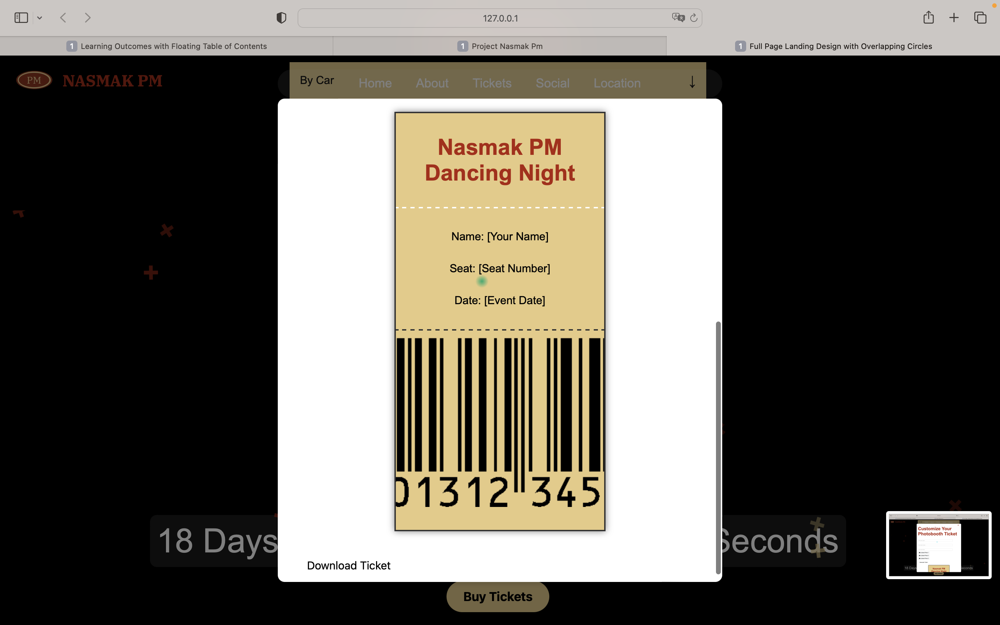
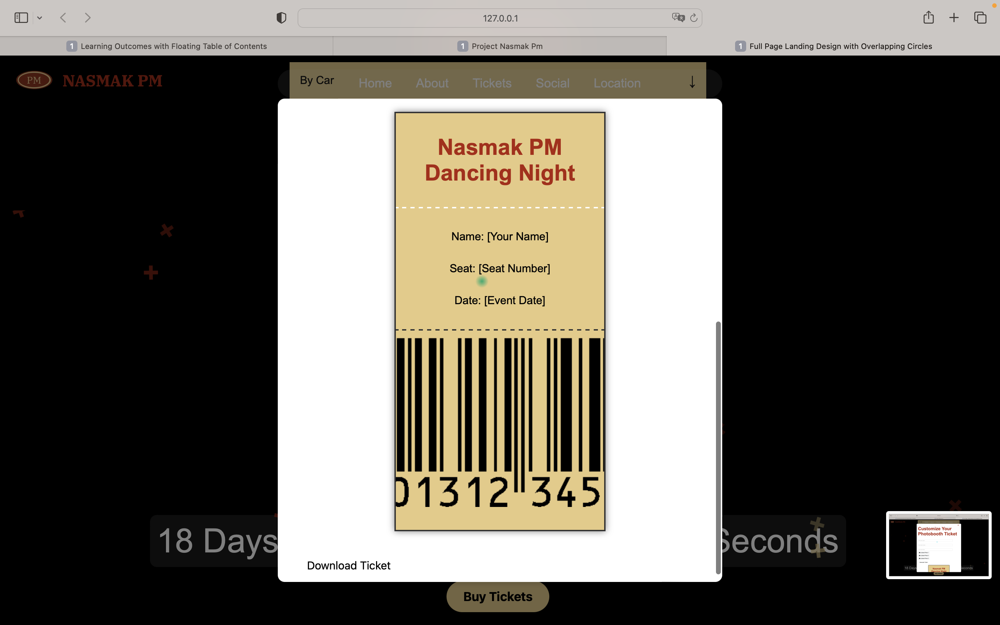
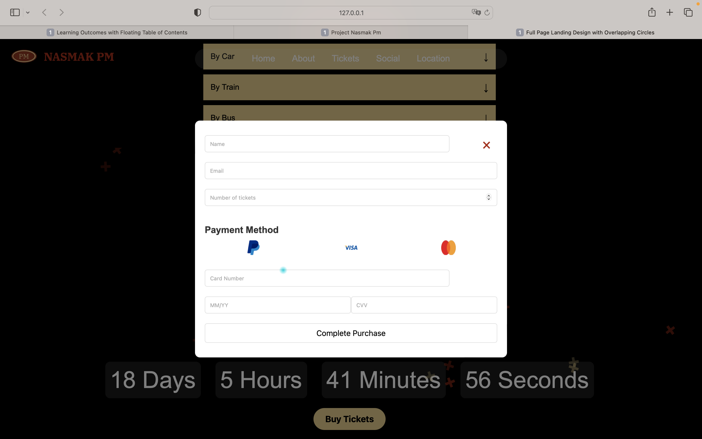
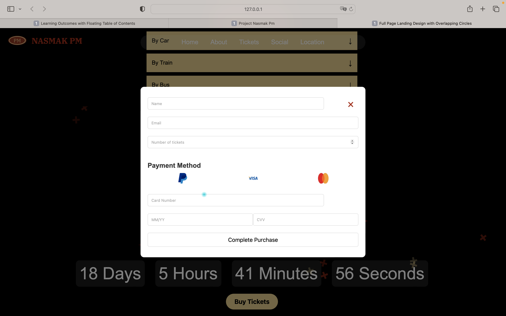

User test 2
After the project ended, I conducted a user test with five people to ensure the website I created for the Nasmak PM Band was both interactive and user-friendly. My main goal was to make the website as enjoyable as possible for the target audience, ensuring they understood the structure and found it easy to use.
For the first task, I gave them two versions of the website: one with the ticket customization option and one without. As they were scrolling and buying tickets, I noticed that when they reached the step to customize their tickets, they had big smiles. One of the testers, a 23-year-old woman who enjoys this type of music, even asked me to send her the customized ticket after the test. When they tested the version without this option, they mentioned that it felt like any other generic website and was more plain. This confirmed to me that the ticket customization feature added a unique, engaging element to the website.
The second task focused on an "Easter egg" feature I had added to the event page. I wanted to see if users could understand why it was an Easter egg and how it was connected to the rest of the site. I first tested this feature with my manager, who enjoys similar music, but she didn’t immediately understand its purpose. I explained it to her, but my goal was to see if users could figure it out on their own. One user mentioned that if there was going to be an Easter egg, it would be better if it related more directly to the band or the event itself. He suggested something more obvious, like incorporating the band’s face or something related to their music. If I had more time with the project, I’d consider making something like a Pac-Man feature with the band’s face or an interactive element tied to their music.
The third task was to test if users understood the website structure and if it was easy to navigate. During my first user test with my teacher Jo An, she told me that the website structure wasn’t very clear, and I needed to make some changes. After applying her feedback, I tested the revised version with my participants and found that most of them preferred the updated version. They appreciated that it wasn’t as cluttered and that the steps were more clearly defined. However, I received feedback about the Instagram section, where users didn’t understand it and suggested adding a headline to clarify that it was the Instagram section. They also didn’t understand the spinning CDs and expected them to play music.
After gathering all this feedback, I realize that my new version of the website would look quite different, but I can now see how crucial these user tests are for refining the design. It’s been a valuable learning experience, and I now understand why it's important to have these steps in place before finalizing a project.


 

 
